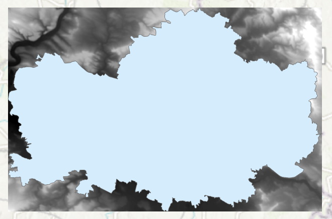

Rastrová data, georeferencování
Cíl cvičení
Seznámení se s rastrovými daty v GIS a ukázka využití těchto dat. Souřadnicové připojení rastrových dat. Práce s Mosaic Dataset.
Základní pojmy
- rastr – datová struktura založená na buňkách uspořádaných do řádek a sloupců, kde hodnota každé buňky reprezentuje hodnotu jevu
- rastrová data – prostorová data vyjádřená formou matice buněk nebo pixelů; spojitá data (nejčastěji digitální modely terénu, digitalizované mapy)
- pixel (buňka) – základní geometrický prvek zpravidla čtvercového tvaru; jeho množina vytváří rastrový digitální obraz; 1 buňka = 1 hodnota
- prostorové rozlišení rastru – velikost 1 buňky (pixelu) rastru (cell size)
- resample – změna prostorového rozlišení rastru
- digitální model terénu (DMT) – digitální reprezentace prostorových objektů (obecný pojem obsahující různé způsoby vyjádření terénního reiéfu nebo povrchu)
- digitální model reliéfu (DMR) – digitální reprezentace zemského povrchu (NEbsahuje vegetaci a lidské stavby)
- digitální model povrchu (DMP) – digitální reprezentace zemského povrchu (obsahuje vegetaci a lidské stavby, které jsou pevně spojené s reliéfem)
- transformace – obecný pojem pro výpočet, jehož cílem je převod souřadnic bodů z jednoho souřadnicového systému do druhého
- georeference – souřadnicové určení snímku
- pyramidování rastru – ukládání dat do menšího rozlišení pro rychlejší práci; pyramidy (náhledy) jsou uloženy v souborech .ovr
- mosaic dataset – mozaika; datová sada sjednocující jeden či více rastrů; umožňuje ořez mimorámových údajů
Digitální modely terénu České republiky
- DMP 1G – Digitální model povrchu České republiky 1. generace (DMP 1G) představuje zobrazení území včetně staveb a rostlinného pokryvu ve formě nepravidelné sítě výškových bodů (TIN) s úplnou střední chybou výšky 0,4 m pro přesně vymezené objekty (budovy) a 0,7 m pro objekty přesně neohraničené (lesy a další prvky rostlinného pokryvu). Model vznikl z dat pořízených metodou leteckého laserového skenování výškopisu území České republiky v letech 2009 až 2013.
- DMR 4G – Digitální model reliéfu České republiky 4. generace (DMR 4G) představuje zobrazení přirozeného nebo lidskou činností upraveného zemského povrchu v digitálním tvaru ve formě výšek diskrétních bodů v pravidelné síti (5 x 5 m) bodů o souřadnicích X,Y,H, kde H reprezentuje nadmořskou výšku ve výškovém referenčním systému Balt po vyrovnání (Bpv) s úplnou střední chybou výšky 0,3 m v odkrytém terénu a 1 m v zalesněném terénu. Model vznikl z dat pořízených metodou leteckého laserového skenování výškopisu území České republiky v letech 2009 až 2013.
- DMR 5G – Digitální model reliéfu České republiky 5. generace (DMR 5G) představuje zobrazení přirozeného nebo lidskou činností upraveného zemského povrchu v digitálním tvaru ve formě výšek diskrétních bodů v nepravidelné trojúhelníkové síti (TIN) bodů o souřadnicích X,Y,H, kde H reprezentuje nadmořskou výšku ve výškovém referenčním systému Balt po vyrovnání (Bpv) s úplnou střední chybou výšky 0,18 m v odkrytém terénu a 0,3 m v zalesněném terénu. Model vznikl z dat pořízených metodou leteckého laserového skenování výškopisu území České republiky v letech 2009 až 2013. Dokončen byl k 30. 6. 2016 na celém území ČR. (Zdroj: ČÚZK)
Použité datové podklady
Náplň cvičení
Ukázka nejčastějších rastrových typů dat
1. Digitální model terénu/reliéfu

2. Stínovaný reliéf

3. Naskenovaný mapový list

Práce s digitálním modelem reliéfu
Zdroj dat – DMR 4G (ArcČR 500)
DMR 4G představuje hodnoty nadmořské výšky pro Českou republiku s rozlišením 5x5 metrů. Verze z ArcČR je však převzorkovaná a má velikost 1 pixelu 50x50 metrů.
1. Načteme DMR 4G z databáze ArcČR (vrstva DigitalniModelReliefu).
2. Zjištění prostorového rozlišení rastru (pravý klik na daný rastr v záložce Contents -> Properties -> Source -> Raster Information -> Cell Size X/Y).
3. Vybereme okres pro ořez rastru (OkresyPolygony).
4. Export vybraného okresu do samostatné vrstvy provedeme přes pravý klik myši na vybranou vrstvu -> Data -> Export Features.

5. Ořez rastru lze provést několika způsoby. Nejjednodušší možností je funkce Clip Raster, která vytvoří ořez dle nejmenšího ohraničujícího obdélníku.

{kind=link}
6. Další možností je funkce Extract by Mask, jež ořízne rastr přesně dle polygonu (s přesností na pixely).

Ukázka změny symbologie rastru
Rastrovým vrstvám lze (stejně jako vektorovým) měnit vzhled v záložce Symbology. Nabídka se zobrazí pravým klinutím myši na danou vrstvu -> Symbology.

Georeferencování rastru
Zdroj dat – ČÚZK
Návod ke georeferencování:
1. Načtení rastru do mapového okna z adresáře v záložce Catalog. Rastr se umístí po počátku aktuálního souřadnicového systému. Přiblížit se na něj lze po kliknutí pravým tlačítkem na jeho název v záložce Contents -> Zoom To Layer.
2. Následně zapneme funkci Georeference: záložka Imagery -> Georeference.

3. V nástroji Georeference je potřeba nastavit identické body, na základě kterých se mapový list transformuje do souřadnicového systému mapy.
4. Mapu přiblížíme na výřez obrazovky tlačítkem Fit to Display.
5. Pokud již známe identické body, je možné je importovat pomocí Import Control Points. Jestliže tyto body nemáme, musíme je ručně vytvořit tlačítkem Add Control Points.
6. Při vkládání bodů se nejprve určí bod ze vstupního mapového listu (source) a následně jeho ekvivalent v mapě (target). Důležité je vybírat identické body rovnoměrně po celé ploše mapového listu a ideálně vybírat taková místa, která jsou na obou vrstvách (mapový list a podkladová mapa) totožná. Nejčastěji se jedná o rohy významných budov (kostely), křížení silnic či boží muka. Identické body a jejich přesnost určujeme dle měřítka georeferencované mapy.
7. V některých případech je velmi obtížné najít identické body, zejména u starších archiválií. Na příkladu, který je uveden v tomto návodu, je patrná obrovská změna využití ploch v České Třebové.

Zadávání souřadnic identických bodů:
Pokud známe souřadnice identického bodu, lze je zapsat ručně: klikneme na bod v připojované mapě -> pravým kliknutím myši následně otevřeme nabídku, ve které se zadají souřadnice identického bodu v cílové mapě. Tuto metodu lze využít při georeferencování na geodeticky zaměřené body nebo na rohy mapového listů o známých souřadnicích (např. Topografické mapy v systému S–52).
8. Během procesu georeference je nutné sledovat přesnost výsledného souřadnicoého umístění dat. Tu na jdeme v tabulce Control Point Table v nástroji Georeference. V této tabulce se nachází přehled všech identických bodů včetně jejich souřadnicových přesností. Můžeme zde také body mazat nebo je vyřadit z výpočtu transformace. Body jsou zároveň znázorněny v mapovém okně.
9. Při georeferencování v ArcGIS Pro lze použít několik druhů souřadnicových transformací. Druh transforamce volíme na základě vstupních dat. Pro ukázku s císařskými otisky stabilního katastru, je ideální afinní transformace, která se nabízí jako výchozí.
10. Pokud jsme spokojeni s georeferencováním, uložíme jej tlačítkem Save. Jestliže by bylo potřeba, je možné nastavení souřadnicového umístění změnit. Nástroj Georeference můžeme nyní zavřít Close.
Georeferencování vytvoří pro každý rastr dva další soubory s parametry:
-
JGWX – transformační klíč
-
XML – informace o souřadnicovém systému a parametrech georeference
Vytvoření mozaiky
Pro vytvoření ucelené mapové vrstvy a následné zpracování rastrů, se využívá Mosaic Dataset. Do mozaiky přesuneme požadované rastry. Mozaika vygeneruje vektorové vrstvy Footprint a Boundary. Footprint slouží k ořezu mimorámových údajů každého rastru a Boundary je ohraničení celé mozaiky.
1. Mosaic Dataset vytvoříme kliknutím pravého tlačítka myši na geodatabázi v záložce Catalog -> New -> Mosaic Dataset.

2. V záložce Geoprocessing vyplníme název mozaiky Mosaic Dataset Name a příslušný souřadnicový systém Coordinate System (ten je vhodné zvolit stejný jako v mapě – Current Map). Ostaní parametry ponecháme ve výchozím nastavení.
{kind=link}
3. Vytvořená mozaika se rovnou přidá do mapy, tudíž její vrstvu vidíme v záložce Contents. Mozaika je stále prázdná, musíme do ní tedy přidat georeferencované rastry.
4. Pravým kliknutím na mozaiku v záložce Catalog -> Add Rasters otevřeme funkci importu rastrů do mozaiky. Funkci lze najít i v záložce Geoprocessing.

5. Ve funkci Add Rasters To Mosaic Dataset zvolíme výstupní mozaiku a ikonou s plusem v části Input Data nahrajeme soubory. Pokud máme více georeferencovaných rastrů, je vhodné je uchovávat v jedné složce (včetně souborů určujících parametry transformace), kterou pak do mozaiky nahrajeme celou. V jiném případě můžeme nahrát přímo soubor tak, že změníme v Input Data Folder na File. Při výběru souboru v průzkumníku pak změníme CSV na všechny typy souborů a najdeme potřebné soubory. Ostatní parametry nyní ponecháme ve výchozím stavu.
{kind=link}
Editování mozaiky
1. Pro vytvoření bezešvé mozaiky je potřeba nastavit hranice vrstvy Footprint dle požadovaného ořezu dat.
2. V záložce Edit zvolíme Edit Vertices a pro přidání, odebrání či posunutí lomových bodů využíváme nově otevřenou nabídku ikon v dolní části obrazovky. Pro uložení editace musíme stisknout ikonu Finish dole ve zmíněné nabídce ikon a následovně Save nahoře vlevo v záložce Edit. Vzhledem k tomu, že císařské otisky stabilního katastru jsou mapy bez pravidelného jednotného kladu mapových listů, je nutné editaci Footprintu oklikat ručně. Automatický ořez Footprintu lze použít například na data Státní mapy 1 : 5 000 – odvozené. Tato metoda je probírána v následujícím cvičení.
{kind=link}
3. Při editaci sousedících mapových listů je nutné lomové body přichytit na sebe se zapnutou funkcí Snapping v záložce Edit. Jinak by nebyla mozaika bezešvá a obsahovala by díry.
4. Ořez rastru dle Footprintu je nutné nastavit v parametrech mozaiky: v Catalogu -> kliknutím pravého tlačítka na mozaiku -> Properties -> Defaults -> zaškrtnout Always Clip the Raster to its Footprint. Pokud se nebudou další případné změny Footprintu projevovat v mapě, je potřeba ve stejné nabídce vždy změnit Default Mosaic Operator z First na Last a naopak.

5. Po potvrzení změny parametrů v parametrech mozaiky by se měly oříznout vybrané mimorámové údaje z mapového listu.

Zdroje
Český úřad zeměměřický a katastrální [online]. [cit. 2024-01-05]. Dostupné z: https://www.cuzk.cz/
Úlohy k procvičení
Úlohy
K řešení následujích úloh použijte datovou sadu ArcČR
500 verzi 3.3 dostupnou na disku S ve složče
K155\Public\data\GIS\ArcCR500 3.3. Zde také najdete souboru s
popisem dat ve formátu PDF. Další datové vrstvy, která budete
potřebovat pro vyřešení následujících úloh, jsou dostupné ke stažení
jako zip archiv.
-
Vizuálně zjistěte jaká je nejvíce zastoupená "barva" podloží v okrese Pelhřimov.
-
Vizuálně zjistěte na jakém mapovém listu ZM25 leží Mšené Žehrovice.
-
Vytvořte výsledný rastr, který bude v souřadnicovém systému UTM-33N (velikost pixelu 300m). Vrstvu vyexportujte do formátu GeoTIFF.